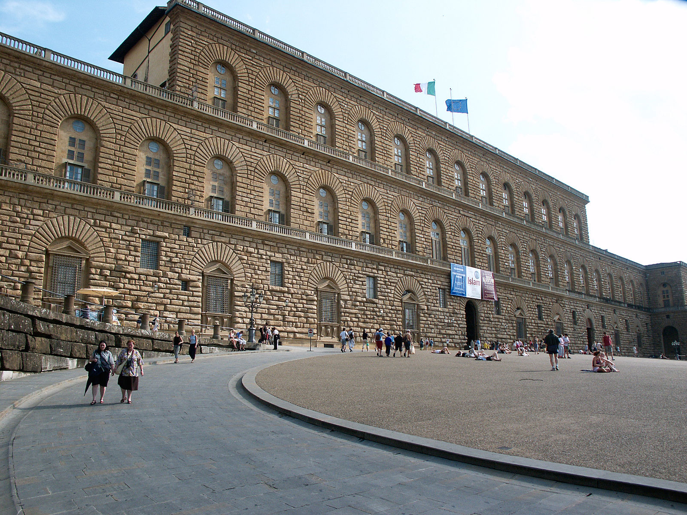

Culture
Histoire de la ville
Architecture
Infos Pratiques
Actualités de la ville
Transports
Astuces
Nos bonnes adresses
Insolites
Visiter Florence
Autour de vous
Nos circuit
Architecture
Palazzo Vecchio
Le Duomo
Ponte Vecchio

Musée des Offices
Jardin Boboli
Palais Pitti